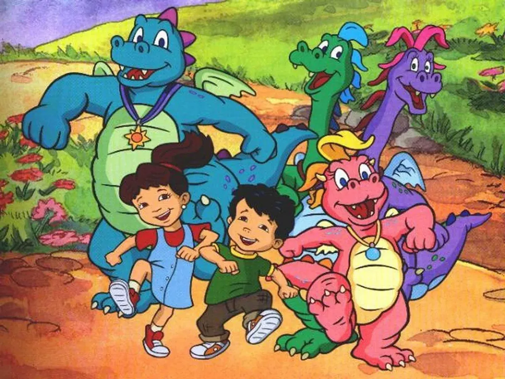
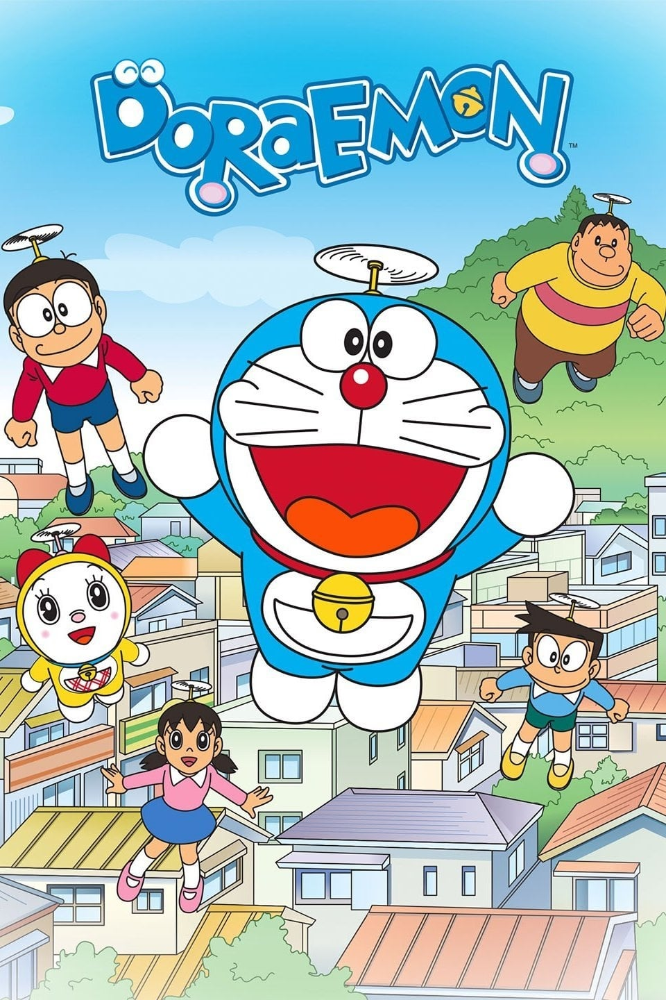
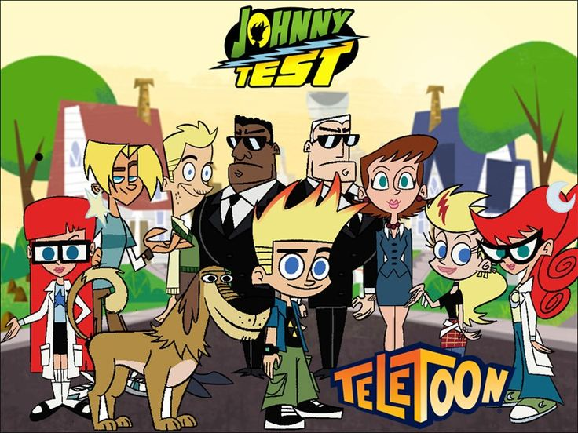

"Dragon Tales" is an animated television series that follows the adventures of siblings Emmy and Max asthey travel to
Dragon Land, a fantastical world inhabited by dragons, via an enchanted scale. In Dragon Land, they befriend dragons
Cassie,Ord, Zak, and Wheezie, helping them with their problems and learning valuable lessons. The series premiered on
PBS Kids in 1999 advanced ran until 2005.

Doraemon is a manga and anime series about a robotic cat from the 22nd century who travels back in time to help lazy
and clumsy boy named Nobita Nobi. Doraemon is known for his four-dimensional pocket, which holds a vast array of
futuristic gadgetsthat he uses to aid Nobita in his adventures and overcome various challenges. The series revolves
around their daily lives,Nobita's struggles, and the humorous situations that arise from Doraemon's gadgets.

Oggy, an anthropomorphic cat, would prefer to spend his days watching television and eating but is continually
pestered by three roaches: Joey, Marky and Dee Dee. The cockroaches' slapstick mischief ranges from plundering
Oggy's refrigerator to hijacking the train he just boarded. In many situations, Oggy is also helped by Jack,who
is more violent and short-tempered than himand is also annoyed by the cockroaches. Bob, a short-tempered bulldog,
also appears in the show and is Oggy's neighbor.

The series revolves around the adventures of the titular character, Johnny Test, an 11-year-old suburban boy who
lives with his parents, his "super-genius" 13-year-old twin sisters, Susan and Mary, who are scientists and best
friends with each other,and a talking dog named Dukey. They reside in the fictional town of Porkbelly in North
America. Johnny is often used as a test subject for his genius twin sisters' inventions and experiments, ranging
from gadgets to superpowers. Their experiments often cause problems that he must resolve, and he must sometimes
fight villains in the process. He occasionally saves the world with his sisters' inventions.